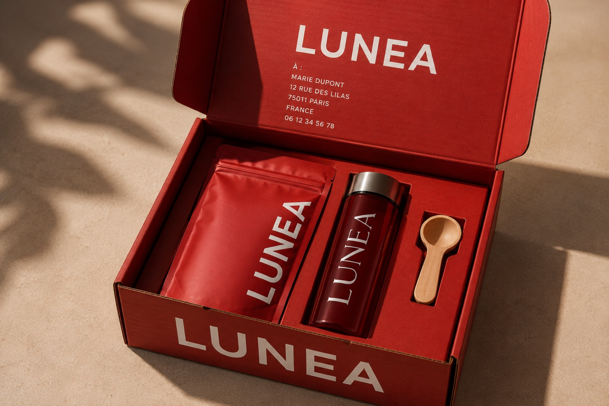

Blog LUNEA
Comprendre le cycle, les plantes et le rituel.
Des guides clairs, rédigés à partir de la bibliographie LUNEA et d'études scientifiques sélectionnées, pour mieux situer chaque plante dans une approche globale du confort féminin.

Guides SEO
Les sujets que vos clientes recherchent avant de choisir un rituel.
Chaque article renvoie vers la formule, les ingrédients et les offres LUNEA pour créer un maillage interne simple et utile.
 Cycle féminin
Cycle féminin
Règles douloureuses : comprendre les crampes et les plantes étudiées
Prostaglandines, contractions utérines, gingembre, cumin et galanga : un guide prudent et sourcé.
 Digestion
Digestion
Ballonnements avant les règles : digestion, cycle et plantes
Pourquoi le ventre peut sembler plus lourd autour des règles et comment installer une routine digestive.
 Énergie
Énergie
Fatigue pendant les règles : comprendre l'énergie qui baisse
Ginseng, gingembre, sommeil et régularité : les leviers d'un accompagnement naturel.
 Équilibre
Équilibre
Humeur et cycle féminin : pourquoi une routine peut aider
Fluctuations, stress ressenti, Gotu Kola et ancrage quotidien autour du cycle.
 Plantes
Plantes
Plantes pour le cycle féminin : comprendre une formule en synergie
Pourquoi LUNEA associe plusieurs familles végétales au lieu de miser sur une seule plante.

MénopauseMénopause, bouffées de chaleur et plantes étudiées
Ginseng, curcuma, noni et limites des études : une lecture utile et nuancée.
Ingrédient
Gingembre et règles : ce que disent les études
Un ingrédient classique du confort digestif, aussi étudié dans la dysménorrhée primaire.
 Ingrédient
Ingrédient
Curcuma, inflammation et équilibre féminin
Curcumine, ménopause, marqueurs inflammatoires et équilibre féminin.
Découvrir la formule complète.
Les articles du blog expliquent les grands mécanismes. Pour voir les 13 plantes, les pourcentages et le rôle de chaque ingrédient dans LUNEA, consultez la page formule.